January 28, 2026
Don't mind the terrible drawings, I am drawing these in ms paint with a mouse and keyboard
Recently in a project class, we were tasked with building some kind of motor based servo actuator. It would be way easier and probably more practical to build an H bridge that drives a brushed DC motor along with an encoder and a PID loop to control the position. This would work, but I thought that it would be an interesting challenge to try to build a brushless servo controller that used Field Oriented Control (FOC).
Brushless 3-phase motor
This kind of motor has a few different names: BLDC motor, three phase brushless motor, permanent magnet synchronous motor, etc. Basically, it consists of an even number of permanant magnets attached to the rotor, and an integer multiple of three number of stator poles. These stator windings are connected in either a delta or a wye configuration, but the same controller can control both delta and wye motors.

The three phase motor can be simplified to the case of having three stator coils, and two rotor poles (one north and one south).
The permanent magnet rotor will produce a B field vector in the direction of south-north. Lets call this vector \( \vec{B_{\text{rot}}} \).
In addition, each of the coils will produce a B field vector along their axis, with a magnitude proportional to the current running through it. Lets call the superposition of these three vectors \( \vec{B_{\text{sta}}} \).
So now \( \vec{B_{\text{sta}}} \) is essentially a linear superposition of the three basis vectors which come from the physical angle of the stator coils.
To be a bit more clear, the \( \vec{B_{\text{sta}}} \) vector can be more concretely defined as the follows:
\( \vec{B_{\text{sta}}} = k I_A \hat{a} + k I_B \hat{b} + k I_C \hat{c} \)
where:
\( I_A \), \( I_B \), \( I_C \) are the phase currents
\( k \) is some constant that relates the coil current to the B field intensity at some distance (we only care about direction here so don't worry too much about this)
and unit vectors \( \hat{a} = \begin{bmatrix} 1 \\ 0 \end{bmatrix} \), \( \hat{b} = \begin{bmatrix} \frac{\sqrt{3}}{2} \\ -\frac{1}{2} \end{bmatrix} \), and \( \hat{c} = \begin{bmatrix} -\frac{\sqrt{3}}{2} \\ -\frac{1}{2} \end{bmatrix} \) in a cartesian (X, Y) space
Also, in the topic of motor control, people usually write \( \boldsymbol{\alpha} \) in place of X, and \( \boldsymbol{\beta} \) in place of Y.
I think this is a bit less confusing if you first think of all three coils as independant coils such that you can control each phase current independantly. In a real motor, these coils will be connected in a delta or wye configuration. Note that in this case, the manufacturer will ensure that the windings are wired in a way such that applying a three phase AC voltage to the coils will result in a rotating stator B field vector.
FOC controller

In a BLDC motor like this, there are basically three important vectors to think about.
- Rotor magnetic field vector \( \vec{B_{\text{rot}}} \)
- Stator magnetic field vector \( \vec{B_{\text{sta}}} \)
- Applied voltage vector \( \vec{V_{\text{app}}} \)
The rotor magnetic field vector is simply the direction the rotor is pointing.
The stator magnetic field vector is the direction of the superposition of the three individual phase B fields. This is the same direction as the phase of the three line currents, so it can also be called the stator current vector.
The applied voltage vector is the phase of the applied three phase voltage. During low rotation speeds, this is almost the same direction as the stator current vector, but generally the current vector will lag the voltage vector a little bit due to the motor inductance as well as back EMF.
Magnetic force from the stator coils will basically try to pull the rotor magnets towards the opposite pole when energized, and away from the similar pole. This basically means that the torque is proportional to the sine of the angle difference between the stator magnetic field vector, and the rotor magnetic field vector.
The main idea of FOC is to move the applied voltage vector such that the the stator magnetic field vector is always perpendicular to the rotor magnetic field vector.
This way, the controller maximises torque for a given phase current. The controller also sets the magnitude of the stator magnetic field by controlling the phase current magnitude, as well as direction.
Implementation of FOC
Here is the block diagram of the FOC controller. This is essentially the classic FOC block diagram, with an additional position PID controller.
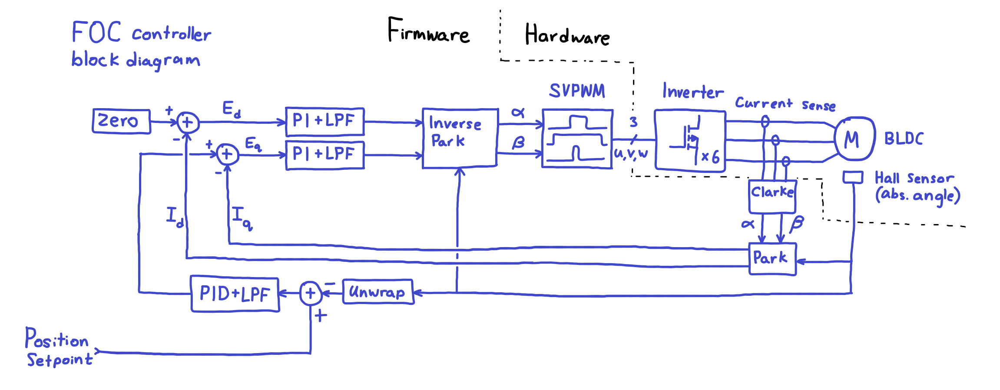
For FOC to be possible, in most cases, a few things are required of the controller board.
- An absolute rotor angle sensor
- Current sensors for each motor phase
- PWM modulation of the 3-phase power inverter
SVPWM
I think a good place to start is with SVPWM. Basically, this is a way to set the applied phase voltage vector. Cheap hobby grade electronic speed controllers usually drive the motor with a trapezoidal signal applied to the motor phases. This basically results in six points in the +- directions of the three, phase basis vectors. This works well for driving a motor cheaply and with good power at medium to high speeds.

With trapezoidal driving, the applied voltage vector is basically just set to the active states labelled 0-5 on the diagram, and the state just increments by one until it wraps around to zero again. This is relatively easy to do, and for RC aircraft and drones this is usually sufficient. But since the vector is moving in discrete states, the torque will drop off in six points around the circle, causing a noticeable sound as well as inconsistent torque.
SVPWM basically rapidly switches between two active states with a variable duty cycle so that the on average the voltage vector is somewhere between two active states. (Actually it switches between the two adjacent active states, as well as the two null states to modulate both direction and magnitude).
This basically results in an applied voltage vector that can be pointed in any direction, and rotated smoothly. Also, a bunch of youtube videos that try to describe FOC (such as the ones by "GreatScott", "Electronoobs", "I Got Distracted", and probably others) only actually describe SVPWM without going into any actual FOC.
The actual PWM signal to do SVPWM is generally a three phase center-aligned PWM. The point in time where all three phases are all high or all low are the null states, and when the three states are not the same, this is an active state.
The process for actually calculating the SVPWM duty cycles is a bit involved. In implementation, this function is a pure math (static) function that does not need any past memory, and simply takes an input vector and returns three PWM numbers. An example of the function header in C could be something like: void compute_svpwm_duty_cycle(float alpha, float beta, float* duty_a, float* duty_b, float* duty_c).
Either a lookup table or a mathematical derivation can be used. In my case I used the pure math one, though it is probably a lot slower than using an LUT.
The math goes as follows:
- Input - 2D vector (essentially two floats, alpha (x axis), and beta (y axis)).
- Figure out which of the six sectors the input vector is in
- After finding the sector, get its two adjacent basis vectors that are on either side of the sector.
- Solve a 2x2 linear system to find the linear combination of these two basis vectors that makes up the input vector. This step outputs two numbers, which are the scaling coefficients of these basis vectors.
- For each SVPWM sector, there are three states the PWM could be in - the two adjacent basis vectors, and a null vector. Based on the two coefficients from the previous step, and one minus the sum of those, find the fraction of time that the SVPWM state should dwell in for each of the states (three states total).
- Map these three states into the three PWM phases based on the sector. Make sure to check that the PWM values are valid, so that you don't blow up your inverter or motor in case an invalid input comes in.
- Output - three PWM duty cycles.
A working (but not necessarily great) implementation is here.
// computes duty cycles and puts them into output pointers. also returns the sector. int compute_svpwm_duty_cycle(float alpha, float beta, float* duty_a, float* duty_b, float* duty_c) { // alpha, beta must be normalized to magnitude <= 1. The magnitude relative to 1 will be the percent power of PWM drive. // SVPWM: https://youtu.be/Gj7qAlsq_m8?list=PLkILZn_GDXSVJzFvQ3r3_p4VBkLxUu2Rp // full servo: https://youtu.be/ilN-DauXVFM?list=PLn8PRpmsu08qL-EG3DRMtRyokpXQJyhp7&t=100 int sector = compute_svpwm_sector(alpha, beta); int sector_incr = sector + 1; if (sector_incr >= 6) sector_incr -= 6; // alpha = horizontal const float basis_vectors_alpha[] = { 1.0f, 0.5f, -0.5f, -1.0f, -0.5f, 0.5f }; // beta = vertical const float basis_vectors_beta[] = { 0.0f, 0.866025403784f, 0.866025403784f, 0.0f, -0.866025403784f, -0.866025403784f }; // vector that forms the lower bound of the sector (positive angle meaning counter clockwise) float alpha_lb = basis_vectors_alpha[sector]; float beta_lb = basis_vectors_beta[sector]; // vector that forms the upper bound of sector float alpha_ub = basis_vectors_alpha[sector_incr]; float beta_ub = basis_vectors_beta[sector_incr]; // solve 2x2 system for linear combination of basis vectors /* alpha_lb*x + alpha_ub*y = alpha beta_lb*x + beta_ub*y = beta */ float inv_det = 1.0f / (alpha_lb * beta_ub - alpha_ub * beta_lb); float coeff_lb = (alpha * beta_ub - alpha_ub * beta) * inv_det; float coeff_ub = (alpha_lb * beta - alpha * beta_lb) * inv_det; // now compute the duty cycle from the vector const float svpwm_scaling_factor = 0.866025403784f; // a required scaling factor for three phase SVPWM to map vector to duty cycle float time_frac_lb = coeff_lb * svpwm_scaling_factor; float time_frac_ub = coeff_ub * svpwm_scaling_factor; float time_frac_null = 1.0f - time_frac_lb - time_frac_ub; float duty_always_off = 0.5f * time_frac_null; if (duty_always_off < 0) duty_always_off = 0.0f; // for safety reasons float duty_modulated_upgoing = time_frac_ub + duty_always_off; float duty_modulated_downgoing = time_frac_lb + duty_always_off; float duty_always_on = 1.0f - duty_always_off; // map the three PWM outputs to the correct channels based on sector float duty_a_sectors[] = { duty_always_on, duty_modulated_downgoing, duty_always_off, duty_always_off, duty_modulated_upgoing, duty_always_on }; float duty_b_sectors[] = { duty_modulated_upgoing, duty_always_on, duty_always_on, duty_modulated_downgoing, duty_always_off, duty_always_off }; float duty_c_sectors[] = { duty_always_off, duty_always_off, duty_modulated_upgoing, duty_always_on, duty_always_on, duty_modulated_downgoing }; *duty_a = duty_a_sectors[sector]; *duty_b = duty_b_sectors[sector]; *duty_c = duty_c_sectors[sector]; return sector; }
For context, if a unit vector (constant magnitude) with a constant rotation speed is fed into the SVPWM block, the three outputs will look something like this. (Just for illustration, ignore the axis scales).
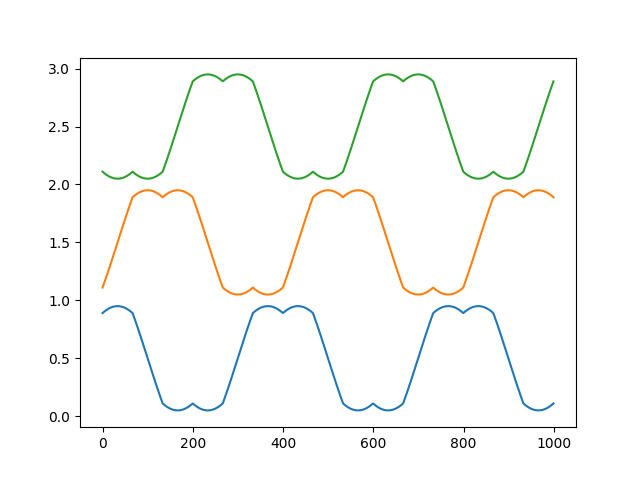
Note that it looks kind of vaguely like a three phase sine wave. A regular three phase sine wave can also effectively drive a motor with constant torque at any angle, but the issue is that it does not fully utilize the supply voltage. SVPWM can use the full voltage, which results in higher torque, essentially for free - only a firmware difference is required.
Clarke transform
This is basically another pure math block that takes a 3 phase current measurement (basically three floats) and turns it into an XY (alpha-beta) vector.
Basically since the motor rotates on a 2D plane, having three phase vectors means there is one that is redundant. The Clarke transform is basically just a good way to remove that redundancy while also using it to reduce noise slightly by means of averaging three inputs into two outputs.
The formula is quite simple, basically a single 3x3 matrix multiplication, and then discard the last entry of the output vector.
\( \begin{bmatrix} \alpha \\ \beta \\ \gamma \end{bmatrix} = \sqrt{\frac{2}{3}} \begin{bmatrix} 1 & -\frac{1}{2} & -\frac{1}{2} \\ 0 & \frac{\sqrt{3}}{2} & -\frac{\sqrt{3}}{2} \\ \frac{1}{\sqrt{2}} & \frac{1}{\sqrt{2}} & \frac{1}{\sqrt{2}} \end{bmatrix} \begin{bmatrix} A \\ B \\ C \end{bmatrix} \)
The name might sound intimidating but it is just a simple formula.
Note that there isn't an inverse Clarke transform. Some FOC block diagrams on the internet will have this, but in my case it is not necessary since the SVPWM block natively takes alpha and beta vectors already, and does not need them to be converted into three phase.
Park transform
This is another one that sounds intimidating but is actually very simple. All this is, is subtracting the angle of the hall sensor angle from the sensed current angle to produce constant (constant in steady state) direct and quadrature current values. The only thing is to pay attention to the signs, or else the whole loop won't work properly.
\( \begin{bmatrix} I_{\text{D, out}} \\ I_{\text{Q, out}} \end{bmatrix} = \begin{bmatrix} \cos{\theta} & \sin{\theta} \\ -\sin{\theta} & \cos{\theta} \end{bmatrix} \begin{bmatrix} \alpha \\ \beta \end{bmatrix} \)
Here, alpha and beta are the transformed current sensor measurements that are coming from the Clarke transform. Theta is the rotor angle measured by the hall sensor. Id and Iq are the direct and quadrature currents.
Inverse Park transform
This is quite literally the same thing as the Park transform but with the hall sensor angle flipped. This just adds the rotor angle back onto the Id and Iq vectors to produce a synchronously spinning vector.
\( \begin{bmatrix} \alpha_{\text{out}} \\ \beta_{\text{out}} \end{bmatrix} = \begin{bmatrix} \cos{\theta} & -\sin{\theta} \\ \sin{\theta} & \cos{\theta} \end{bmatrix} \begin{bmatrix} I_D \\ I_Q \end{bmatrix} \)
Current PI Controllers
These are pretty generic proportional-integral controllers that keep the Id and Iq currents at their intended value. These also include a form of anti-windup for the integral term, as well as a low pass filter on the output to reduce audible noise. As shown, this is the block diagram of the controller. The P term basically does everything while the I term will slowly reduce the steady state error to zero.
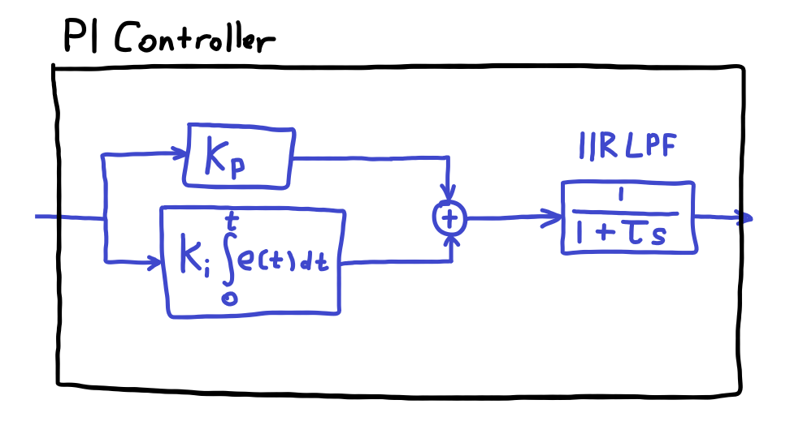
The low pass filter is a first order IIR LPF. In the diagram I just showed the continuous-time high level concept, but in reality it is of course a discrete time IIR. Its difference equation is as follows:
\( y[n] = \frac{\omega_c}{\frac{1}{dt} + \omega_c} (x[n] - y[n-1]) \\ \)
Where dt is the time between controller updates.
In my case, the low pass filter is set to a cutoff frequency of around 150 Hz. In reality it should be around 5-10x higher than the RL constant of the motor phase inductance and resistance (which was about 160 Hz in my case), but here the audible noise was more of a concern than instantaneous current control, so I set it lower.
Position PID Controller
This is essentially the same thing as the PI controller, but an extra derivative term is added. This is to act as a damping term to reduce overshoots. This is actually quite important, because for the robot that we used the motor driver for, the rails had quite low friction and the "gantry" was quite heavy at almost 1 kg. This means that without this D term, the whole thing actually overshoots and oscillates significantly.
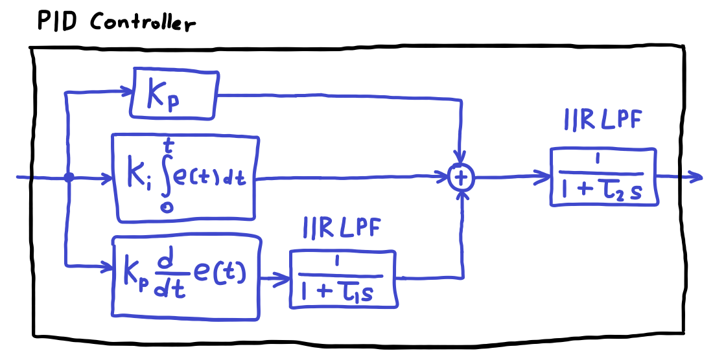
Small note: In the diagrams shown, the PID controller's D term was drawn to take the error signal from after subtracting the setpoint and the feedback. In reality, the P and I terms do take this input, but the D term alone takes only the feedback signal, without subtracting the setpoint. The purpose of this is because if the setpoint is set to a particular value, the step-like input will result in a huge derivative "kick" that could be dangerous or problematic. And since the derivative doesn't care about constant offsets anway, this solves the issue.
In the case of the robot, the PID gains were 5, 0.1, 0.25, respectively. And the output LPF was set to 50 Hz cutoff, with the derivative term LPF set to 20 Hz cutoff. This seemed like a good combo to minimise overshoot but also have decent transient response. Also, the D term filter cutoff must be a very low frequency especially for the robot we were building, since we had essentially a belt-driven gantry of around 700mm length. The belt would oscillate if the D term LPF was set any higher.
Hardware
Now for the fun stuff. For this driver, I rather quickly drew up a schematic and then routed a basic PCB in KiCAD in 1 day since we were in a rush.
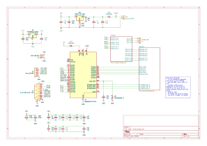
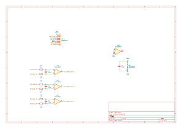
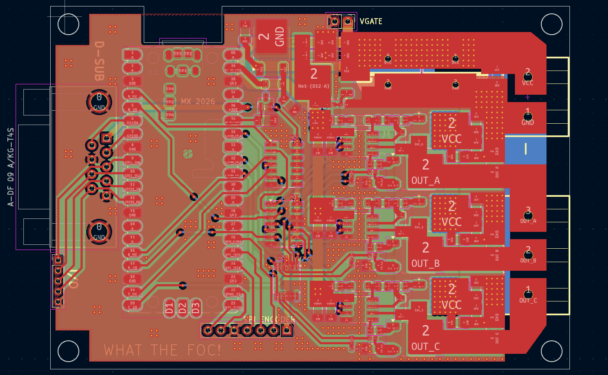
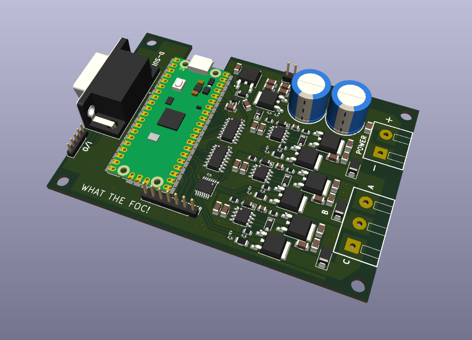
In combination with this, I also made a small board for the TMAG5170 3D hall effect sensors. The selection process for these consisted of going on digikey's hall sensor section and sorting by lowest price, but in hindsight this might have actually been quite lucky. Some other groups in ELEC391 mentioned that their SPI hall sensors had issues with SPI data errors. The common Allegro chips appear to use a checksum, which is resistant to only 1 bit errors. The TMAG5170 has a full 4-bit CRC check, so it is a lot more robust. We never had any issues with SPI communication on these motor driver boards.
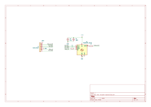
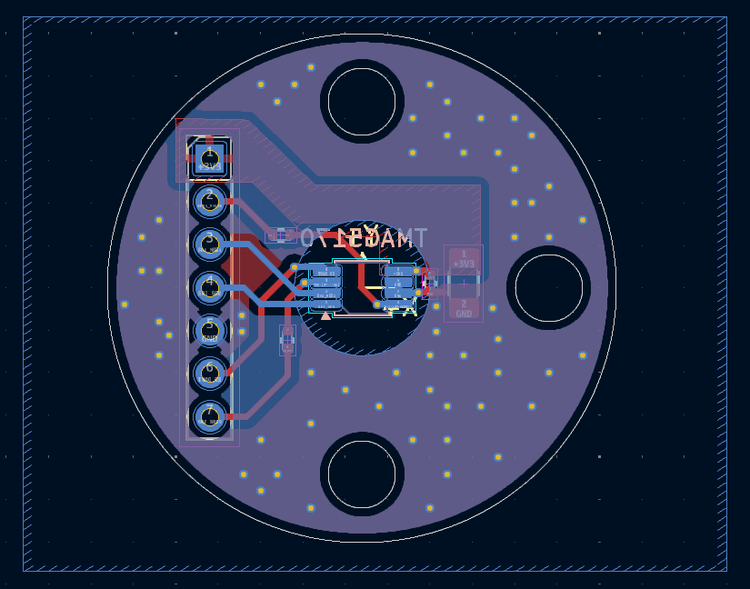
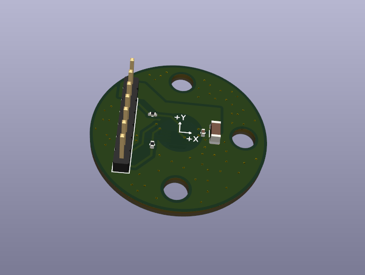
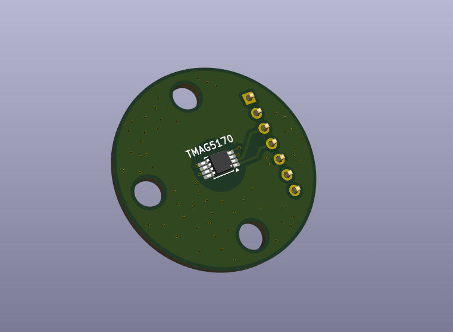
Features
This driver featured 3x LM5109 bootstrapping half-bridge gate drivers from TI. It also included a NOT-NOR logic gate on each half bridge input to act as a hardware interlock to prevent both the high and low side MOSFETs from turning on at the same time. I thought this would be a valuable feature for a prototype board where the firmware was also being developed. The MOSFETs are 6x GSFD0650 N channel MOSFETs, which is a relatively cheap MOSFET featuring 66V max VDS, and 8.8 mOhm RDS(on). Good-Ark appears to be a smaller company compared to Vishay or Infineon, etc, and their MOSFETs are a bit cheaper but appear to be about as good. The board also features an INA4180A2 current sense amplifier (problematic later), as well as an external VGATE header which allows the inverter supply to drop all the way down to near 0V, where the VGATE header would be able to power the gate drivers with an external supply. There is also the pin headers for the TMAG5170 hall sensor board. The decoupling was distributed 24x 10uF MLCCs, with 2x bulk 470uF electrolytics.
Assembly
I did not spend the extra cost for SMT assembly by the PCB manufacturer. My preferred method of assembly for SMT boards is to place solder paste using a syringe onto the PCB, and then place the components manually using tweezers.
Here are some pictures from the assembly process. I actually realized halfway through that I made a small mistake in wiring the bootstrap capacitors on the LM5109 MOSFET drivers. Thankfully I had caught this before I had actually started assembling it, so I could plan the rework.
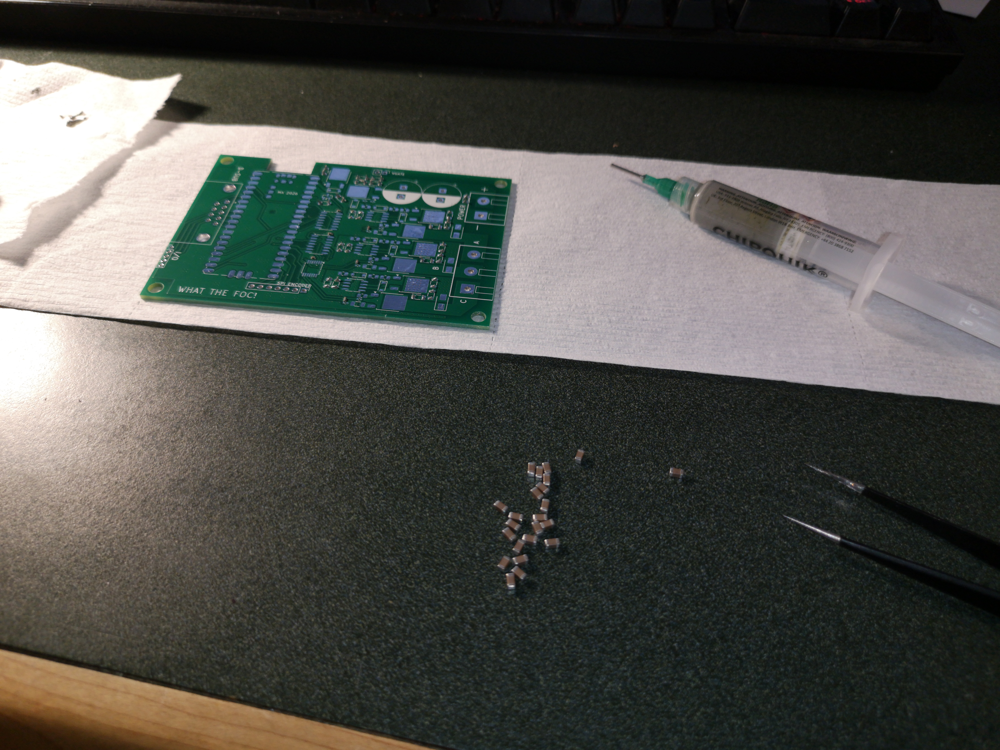
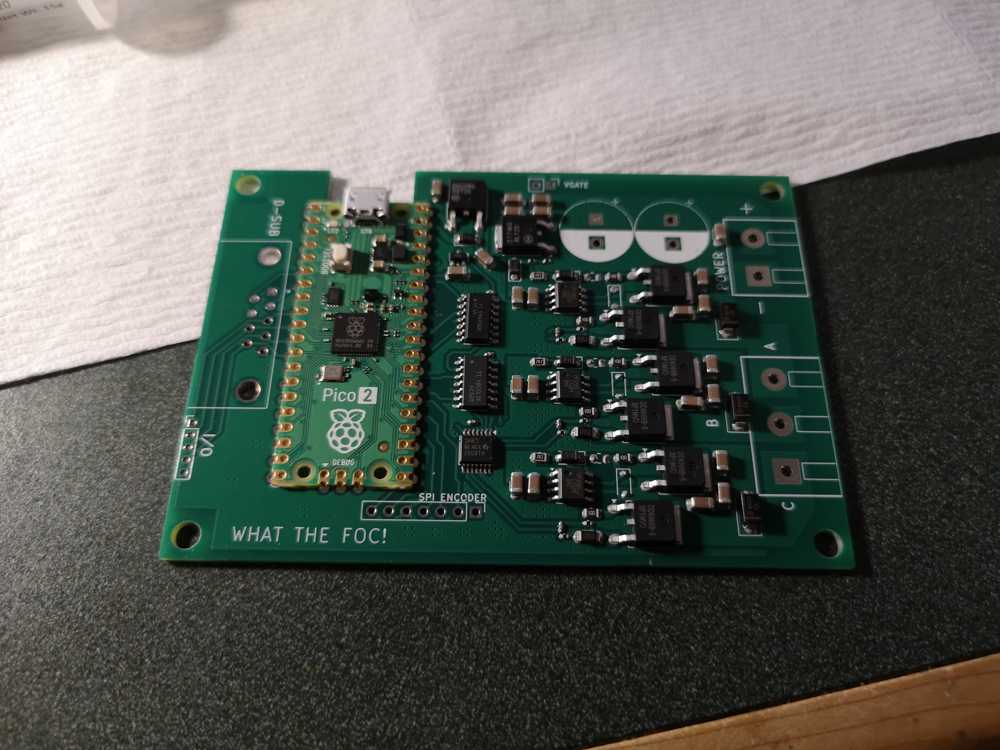
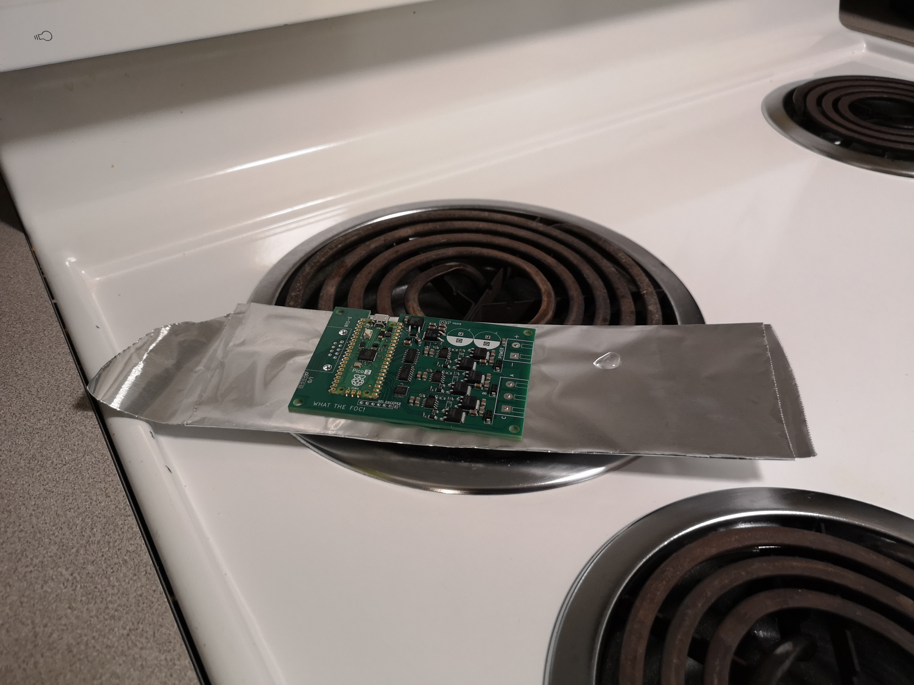
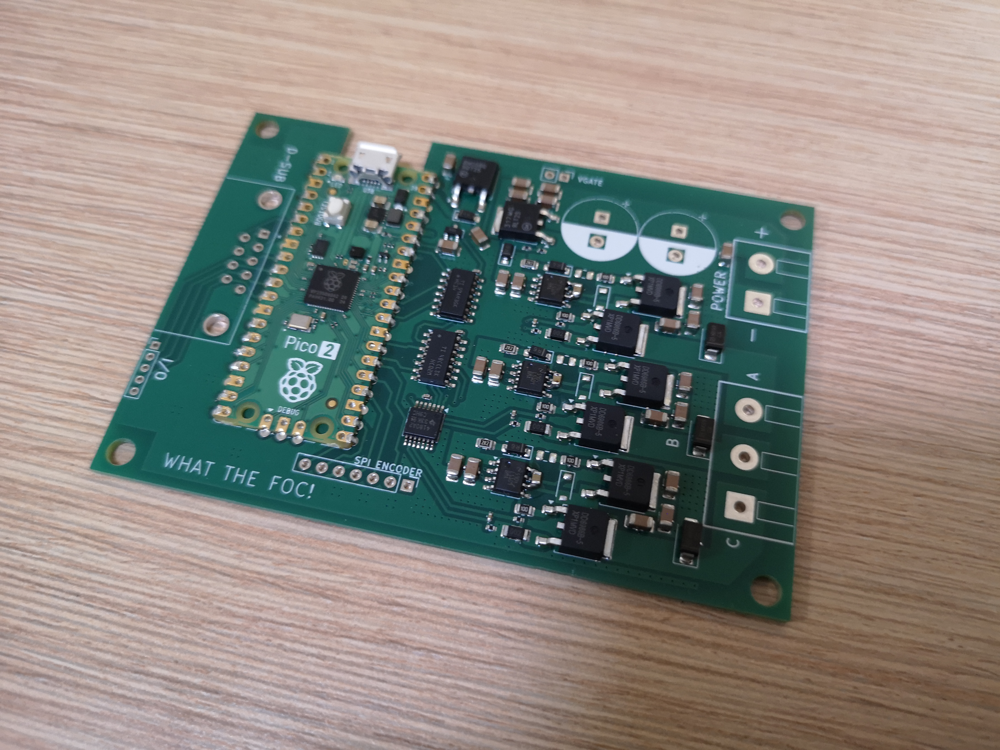
I don't have a reflow oven or hot plate in my university dorm, so I decided to just use some layers of aluminum foil on the kitchen stove. Don't worry, I am using lead free solder.
As you can see, on the LM5109 (8-SOIC ICs), there are some small botch capacitors, and that pad next to it is unpopulated. I will fix this in the next revision.
Firmware and bringup
I think the firmware took probably ten times longer than the hardware. Just getting the SVPWM and SPI communications took 2-3 days, but eventually it mostly worked.
At this stage I could have the motor spinning, but there was another fundamental flaw in the board design. For FOC, phase current sensing is required. This can be done with either in-line sensors, or low-side sensors. I decided on low-side, since it makes the current amplifier circuitry more straightforward. I had however forgotten that if one uses low side sensing, the sensors must be bidirectional. I had forgotten that, and used unidirectional differential amplifiers. In my case I used the INA4180A2. This meant that I basically could not use proper FOC on this board.
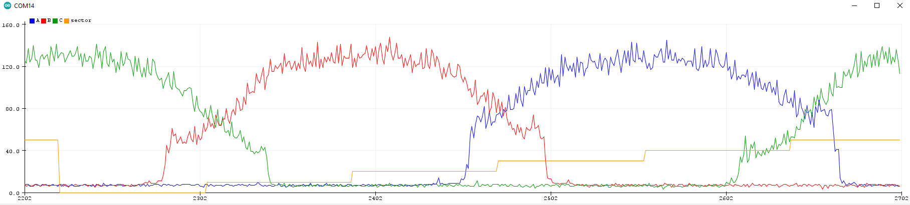
This was quite frustrating. I could actually get the motor to spin like this, but this was done by naively setting the SVPWM vector 90 degrees ahead of the sensed rotor vector, which does actually work but isn't nearly as high performing or efficient as FOC could be. I suppose designing the whole thing in one day (and also never having designed a motor driver before!) leads to this kind of issue.
The good thing however is that the MOSFET drivers (apart from the bootstrap connection typo), as well as the inverter stage worked perfectly. The MOSFETs barely heat up at all while switching at around 50 kHz at a few amps, and SVPWM allowed for very smooth rotation (in open loop mode at this stage). The TMAG5170 also worked well with a small diametric NdFeB magnet.
Revision 2
So having identified the critical issues, I designed a second revision. The board looks quite visually similar, but most significantly, I changed the INA4180A2 unidirectional current sense amplifier to 3x INA181A1 bidirectional ones, and also added a 1V5 reference for the midpoint. I also moved the hall sensor connector to the same side as the motor terminal block, and swapped out the dupont-style header for a Molex Picoblade. I also added a UVLO comparator, and filleted the corners! :D
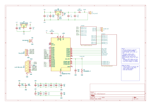
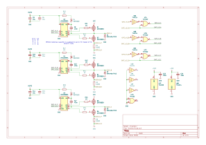
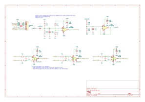
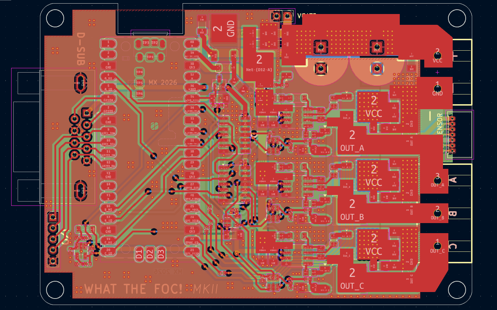
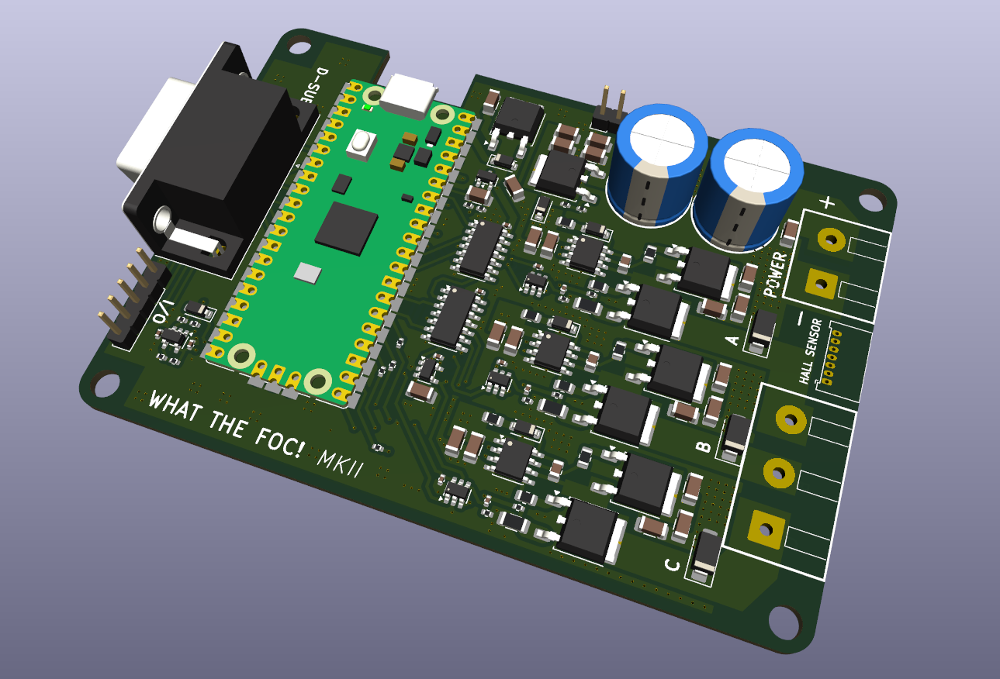
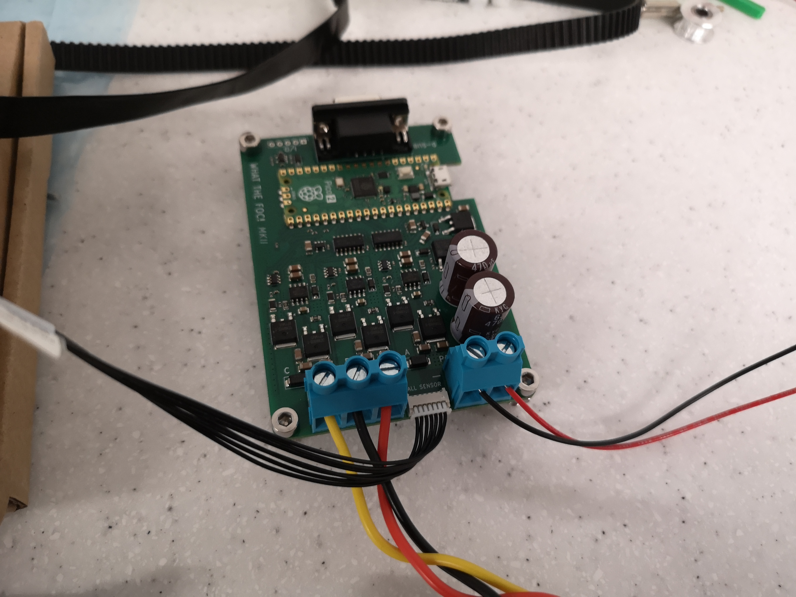
With this new PCB, the current sensing worked well. In hindsight the RP2350 was not a great choice for this project as its ADCs aren't really great, and FOC kind of relies on the ADCs to get current measurements. It did work good enough however.
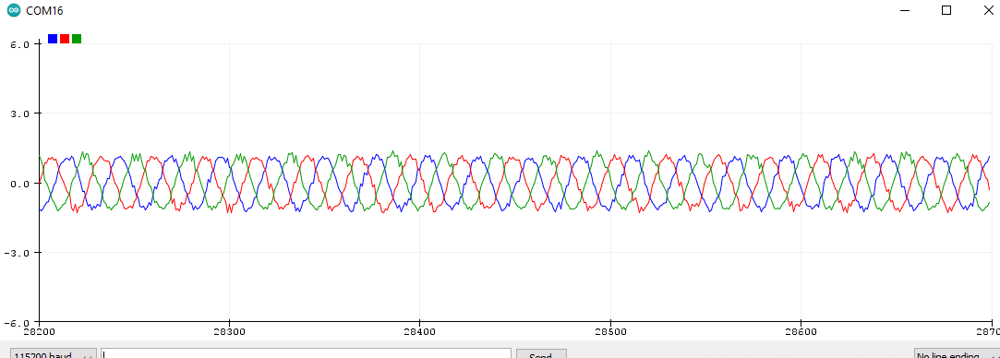
Here is a plot of the phase current at a very low SVPWM power level. As you can see the phase current is a bit noisy, but is indeed a 3 phase sine wave.
In general this board worked well at this stage. Further developments were made to the firmware, and it was integrated into our ELEC391 robot. In this video the motor drivers are running at a maximum 3A setpoint for the FOC controller. In reality the driver can likely reach 10A+ sustained and up to 30A peak.
(Unmuted by default)
If you want to have a look at the firmware, here is the github repo. Note that everything in the "Main" branch is my work while my team members also contributed to the "Communication_With_Mother" branch.